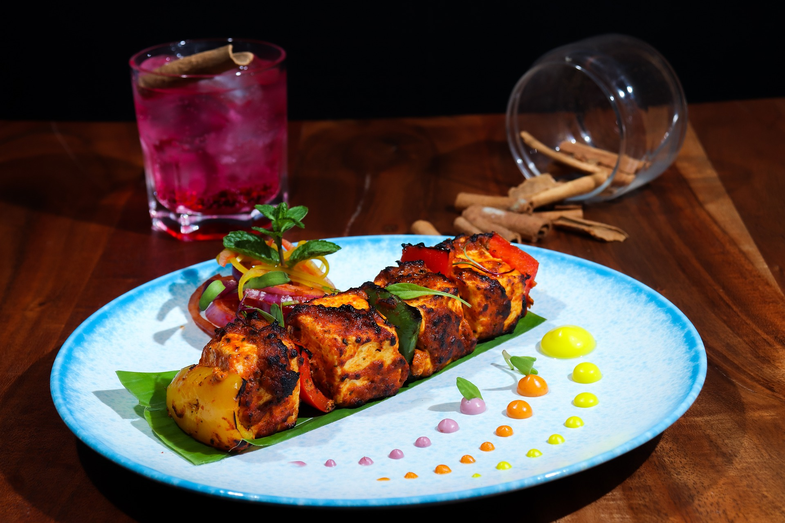

Panner Tikka

Ingridents
For Marinade:
- Plain Yougurt(1 Cup)
- Ginger-Garlic paste(1 Cup)
- Lemon Juice
- Turmeeric(1/4 Tea Spoon)
- Pepper(1/4 Tea Spoon)
- Cumin (1/4 Tea Spoon)
- Garam Masala(1/4 Tea Spoon)
- Salt
Skewers:
- Panner One Inch Cube(7ounce)
- Onian(Chopped)
- Vegetable Oil(1 Tea Spoon)
Procedure:
- Line a fine-mesh strainer with muslin or cheesecloth and set inside a small bowl. Pour in yogurt; let drain for 15 minutes. Discard liquid.
- Mix drained yogurt, ginger-garlic paste, lemon juice, turmeric, chile powder, cumin, garam masala, and salt together in bowl. Add paneer, onion, and green bell pepper and mix well. Marinade for 1 hour.
- Preheat grill for medium heat and lightly oil the grate.
- Skewer marinated paneer, onion, and bell pepper onto metal skewers. Grill until vegetables are soft and cheese is browned, 6 to 8 minutes. Brush with vegetable oil and grill for 1 minute more.
- Mix onion rings with green chutney and serve with skewers.